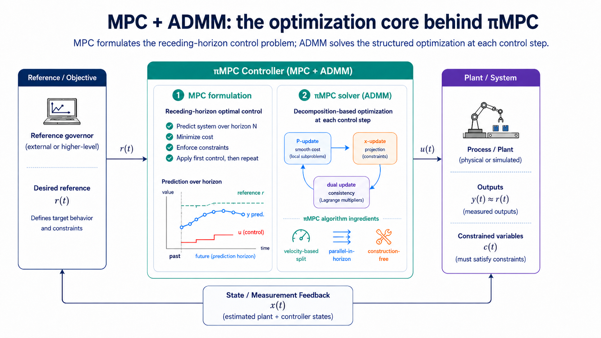
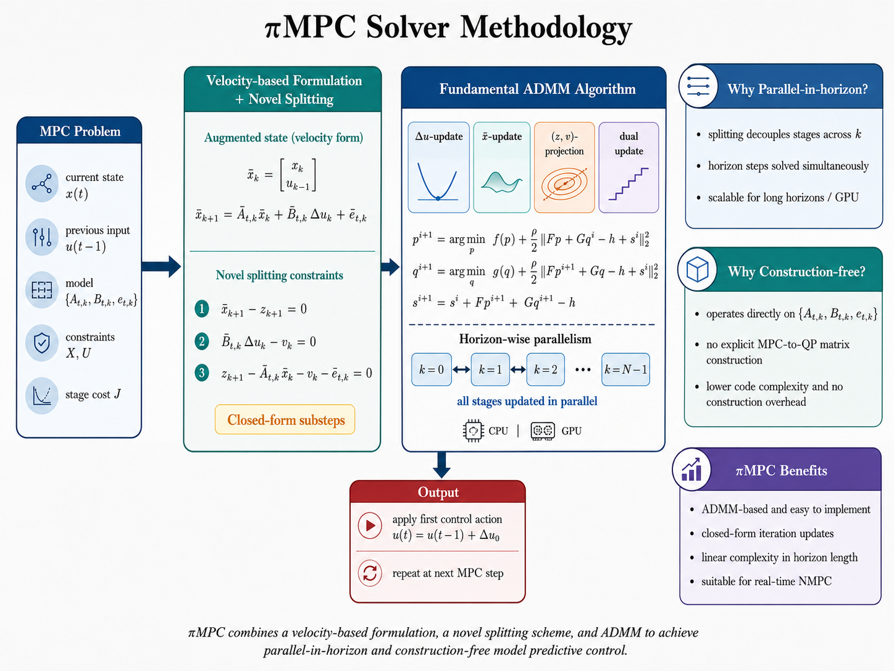
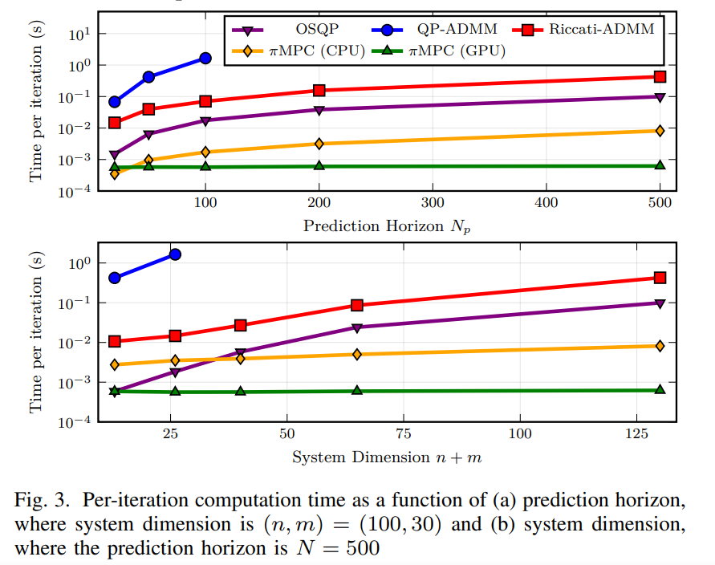

AFTI-16 aircraft
Closed-loop pitch-angle tracking with constrained control inputs and warm-started ADMM solves.

The alternating direction method of multipliers (ADMM) has gained increasing popularity in embedded model predictive control (MPC) due to its code simplicity and pain-free parameter selection. However, existing ADMM solvers either target general quadratic programming (QP) problems or exploit sparse MPC formulations via Riccati recursions, which are inherently sequential and therefore difficult to parallelize for long prediction horizons. This technical note proposes a novel parallel-in-horizon and construction-free nonlinear MPC algorithm, termed πMPC, which combines a new variable-splitting scheme with a velocity-based system representation in the ADMM framework, enabling horizon-wise parallel execution while operating directly on system matrices without explicit MPC-to-QP construction. Numerical experiments and accompanying code are provided to validate the effectiveness of the proposed method.
πMPC solves constrained finite-horizon MPC subproblems directly from the system matrices. A common bound-constrained form is:
Here \(A\), \(B\), and \(e\) are the discrete-time state matrix, input matrix, and affine term. The matrices \(W_y\), \(W_u\), \(W_{\Delta u}\), and \(W_f\) weight output tracking, input usage, input increments, and terminal tracking. More general constrained updates can be handled through projection-friendly ADMM sets, while the package API exposes the common state, input, and input-rate bounds.
πMPC combines a velocity-based formulation, a novel splitting scheme, and ADMM updates that can run across the prediction horizon.


Start with the three tutorial demos, then explore the individual Colab notebooks for additional systems.
Closed-loop pitch-angle tracking with constrained control inputs and warm-started ADMM solves.

A compact stabilization problem for seeing receding-horizon control and input constraints in motion.

Preview-based path tracking with steering and steering-rate limits over a long horizon.


@article{wu2026pimpc,
title={πMPC: A Parallel-in-horizon and Construction-free NMPC Solver},
author={Wu, Liang and Yang, Bo and Li, Junheng and Yang, Xu and Mo, Yilin and Shi, Yang and Ames, Aaron D. and Drgoňa, Ján},
journal={arXiv preprint arXiv:2601.14414},
year={2026},
url={https://arxiv.org/abs/2601.14414}
}